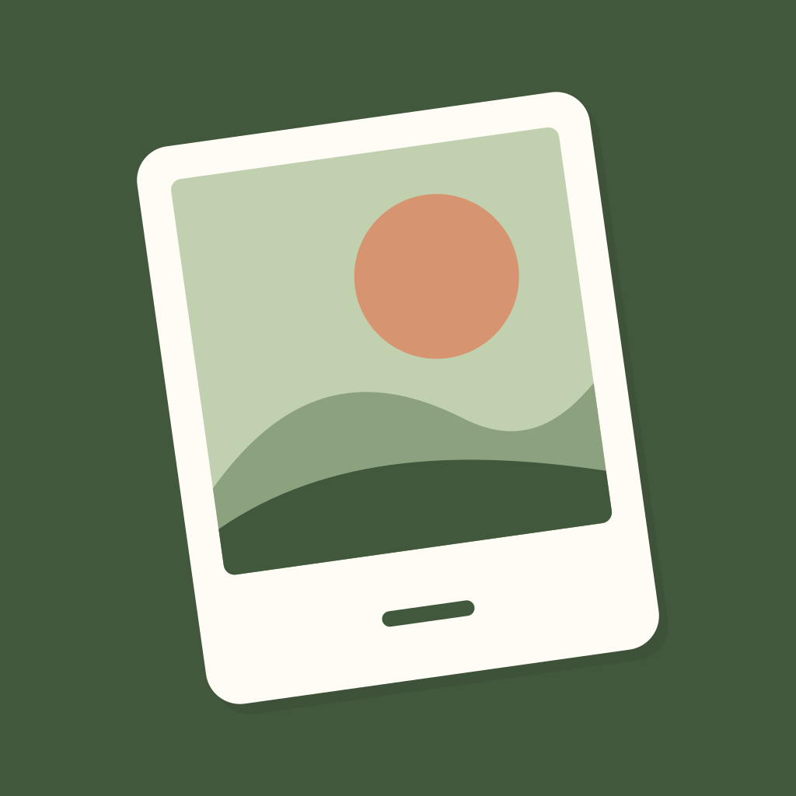

Support · 지원 · サポート · 支援
English · Daily Cut: One Photo a Day
How do I start?
Leave today's cut by taking a photo or choosing one in the system picker. Each date holds one photo; you can replace it later. Add a note of up to 60 characters or adjust the square crop. View your collection as a monthly calendar or a film strip.
How do I find photos from a past day?
Tap a past calendar date to see photos taken that day within the Photos access you allow. Tap Allow photo access to request the system permission, then allow all photos or selected photos. The date search happens on your device; existing library photos are not changed or deleted.
With selected-photo access, photos outside your allowed selection do not appear. Use Manage allowed photos to add photos from this day. If access is denied or restricted, Choose one photo instead opens the system picker. The fallback still requires a readable capture date matching the chosen day. Today continues to use the system picker and can use a photo without a capture date.
If a selected original is only in iCloud, the operating system may download it. An internet connection may be needed.
Are the source file and colors unchanged?
The app stores an upright, GPS-free JPEG at quality 92, with a long-edge ceiling of 4032px and smaller dimensions when needed to meet its size budget. This is a normalized copy, not a byte-for-byte copy of a RAW, HEIC, HDR, or original library file. Color processing uses sRGB. Six tones apply across the collection; tone, crop, and date stamp are applied for display and export without overwriting the app's stored base photo. Display resolution, screen settings, and Photos can affect what you see.
Where are photos and posters saved?
Records stay in the app. Saving capture originals to Photos is off by default. Enable that setting if you want an additional, untoned normalized capture copy after choosing to use a shot. Detail saves include the current tone, crop, and date-stamp setting. Export can save or share JPEG monthly and yearly posters and 7/14/30-day film strips. Saving to Photos requests add-only permission. A destination such as iCloud Photos or a sharing service manages its own copies and may sync them.
How do I back up or change devices?
In Settings, open Backup and restore, create a .dailycut file, and save it to a location you control through Files. To restore, select that file and choose the conflict policy. The receiving installation keeps its own settings and OS permissions. Backups are not encrypted. The main record/photo folder and widget-copy folder are set to be excluded from automatic OS backups; do not rely on that mechanism as your only record backup. External Files or iCloud destinations follow their own policies. Save a backup before uninstalling or changing devices.
Can I undo a deletion?
Use Undo within five seconds. Copies already exported, saved to Photos, shared, or stored in backup files are separate; manage them in the destination app.
How do reminders and widgets work?
Reminders start off. Enable them and select a time in Settings. The app plans local reminders for the next seven calendar days when its schedule is refreshed and skips dates with a photo. Opening the app and changing records or settings refreshes the plan. Notification permission, Focus, and system settings can affect delivery. Add the small or medium widget using the system's widget controls; iOS decides refresh timing.
Which languages and devices?
English, Korean, Japanese, and Traditional Chinese are available, including a system-language option. The iOS app targets iPhone and iPad running iOS26 or later.
Purchases and refunds
Daily Cut is a one-time paid app without in-app purchases, ads, or subscriptions. For an App Store refund request, use Apple's request page and see Apple's refund instructions. Apple handles eligibility and the request; Atto Studio does not promise a separate refund period or approval.
Contact us
Contact Atto Studio at attostudio.support@gmail.com. Describe the problem, app/iOS version, and steps to reproduce it. Avoid personal photos or sensitive details unless necessary. Email is handled in Gmail, kept only as needed for your request, and deleted on request. See the privacy policy for the distinction between local records and email support.
한국어 · 하루 한 컷
어떻게 시작하나요?
오늘 한 컷에서 촬영하거나 시스템 선택기로 사진 한 장을 가져오세요. 한 날짜에는 한 장을 남기며 나중에 바꿀 수 있습니다. 최대 60자 메모와 정사각 자르기를 더하고 달력·가로 필름 띠로 돌아볼 수 있어요.
지난날 사진은 어떻게 찾나요?
달력에서 지난날을 누르면 허용한 사진 범위에서 그날 찍은 사진만 보여요. 사진 접근 허용을 직접 누르면 OS 권한을 요청하며 전체 또는 선택한 사진만 허용할 수 있습니다. 날짜 조회는 기기 안에서 이뤄지고 기존 보관함 사진을 수정·삭제하지 않아요.
선택한 사진만 허용하면 그 범위 밖의 사진은 보이지 않습니다. 허용한 사진 관리에서 이날 사진을 추가할 수 있어요. 거절·제한 시에는 사진 한 장 직접 선택으로 시스템 선택기를 열 수 있으며 읽을 수 있는 촬영 날짜가 선택한 날과 같아야 합니다. 오늘 사진은 기존 시스템 선택기를 사용하고 촬영 날짜가 없어도 넣을 수 있어요.
선택한 원본이 iCloud에만 있으면 운영체제가 다운로드할 수 있으며 인터넷 연결이 필요할 수 있습니다.
원본 파일과 색이 그대로인가요?
앱은 방향을 바로잡고 GPS를 제거한 품질 92 JPEG를 보관합니다. 긴 변은 최대 4032px이며 용량 한도를 위해 더 작게 줄일 수 있어요. RAW·HEIC·HDR 또는 사진 보관함 원본 파일의 바이트 그대로인 사본은 아닙니다. 색 처리는 sRGB 기준입니다. 6톤·자르기·날짜 도장은 보관한 기본 사진에 덮어쓰지 않고 표시·내보내기에 적용합니다. 표시 해상도, 화면 설정과 Photos 처리에 따라 보이는 결과가 달라질 수 있어요.
사진과 포스터는 어디에 저장되나요?
기록은 앱 안에 보관합니다. 촬영 원본을 사진 앱에도 저장하는 설정은 기본 꺼짐이며 켜면 촬영 사진의 사용을 확정할 때 톤 없는 정규화 사본을 추가 저장합니다. 상세 저장은 현재 톤·자르기·날짜 도장 설정을 반영합니다. 월·연 포스터와 최근 7/14/30일 필름 띠를 JPEG로 저장·공유할 수 있어요. Photos에 저장할 때는 추가 전용 권한을 요청합니다. iCloud 사진이나 공유 대상 서비스가 자체 설정에 따라 사본을 동기화할 수 있습니다.
기기 변경과 백업은 어떻게 하나요?
설정의 백업·복원에서 .dailycut 파일을 만들고 Files에서 관리할 위치에 저장하세요. 복원은 그 파일을 선택한 뒤 충돌 처리 방식을 고릅니다. 현 설치의 설정·OS 권한은 유지합니다. 백업은 암호화되지 않습니다. 기본 사진·기록 폴더와 위젯 사본은 자동 OS 백업 제외 설정이므로 그것만 믿고 기록을 맡기지 마세요. Files·iCloud 등 외부 위치는 해당 서비스 정책을 따릅니다. 앱 삭제·기기 변경 전 직접 백업해 주세요.
삭제를 되돌릴 수 있나요?
삭제 뒤 5초 안에 되돌리기를 누르세요. 사진 앱·공유 대상·백업에 저장한 사본은 별개이며 해당 앱에서 관리해야 합니다.
알림과 위젯은 어떻게 동작하나요?
알림은 기본 꺼짐입니다. 설정에서 켜고 시각을 고르면 일정 갱신 때 앞으로 7일의 로컬 알림을 예약하고 사진이 있는 날은 제외합니다. 앱 실행·기록·설정 변경 때 계획을 갱신합니다. 알림 권한·집중 모드·OS 설정이 전달에 영향을 줄 수 있어요. 위젯은 시스템 위젯 기능에서 작은 크기나 중간 크기로 추가하며 갱신 시점은 iOS가 정합니다.
지원 언어와 기기는요?
영어·한국어·일본어·번체 중국어 및 시스템 언어 설정을 제공합니다. iOS26 이상인 iPhone·iPad가 대상입니다.
구매와 환불
유료 1회 구매 앱이며 앱 내 결제·광고·구독은 없습니다. App Store 환불은 Apple 접수 페이지와 공식 환불 안내를 이용해 주세요. 적합성과 요청 처리는 Apple이 담당하며 Atto Studio가 별도 환불 기간이나 승인을 보장하지 않습니다.
문의
Atto Studio attostudio.support@gmail.com으로 문제와 앱/iOS 버전·재현 순서를 보내 주세요. 불필요한 개인 사진·민감한 내용은 제외해 주세요. 메일은 Gmail에서 문의 처리에 필요한 기간만 보관하고 요청 시 삭제합니다. 앱 내부 기록과 문의 메일의 차이는 개인정보 처리방침에서 확인할 수 있습니다.
日本語 · 一日一枚
使い始めるには？
今日の一枚を撮影するか、システムの写真ピッカーから選びます。一つの日付に一枚を保存し、後から差し替えられます。最大60文字のメモと正方形の切り抜きを加え、月のカレンダーや横に続くフィルムで振り返れます。
過去の日の写真を探すには？
カレンダーで過去の日を選ぶと、許可された範囲からその日に撮った写真だけを表示します。写真へのアクセスを許可する操作でOSの許可を求め、すべての写真または選んだ写真だけを許可できます。撮影日の検索は端末内で行い、元の写真は変更・削除しません。
選んだ写真だけを許可した場合、範囲外の写真は表示しません。許可する写真の管理で当日の写真を追加できます。拒否・制限時もシステムの選択画面で一枚選べますが、読み取れる撮影日がその日と一致する必要があります。今日は従来のシステム選択画面を使い、撮影日がない写真も使えます。
選んだ元写真がiCloudだけにある場合はOSがダウンロードすることがあり、通信が必要です。
元ファイルと色はそのまま？
向きを整えてGPSを取り除いた品質92のJPEGを保存し、長辺は最大4032px、容量上限に合わせてさらに小さくする場合があります。RAW・HEIC・HDRやライブラリの元ファイルと同一バイトのコピーではありません。色処理はsRGBです。6色合い、切り抜き、日付は基本写真を上書きせず表示・書き出し時に適用します。表示解像度、画面設定やPhotosの処理によって見え方が変わる場合があります。
写真とポスターの保存先は？
記録はアプリ内に保存します。撮影元写真の「写真」への追加保存は初期状態ではオフで、有効にすると使用を確定した写真の色合いなしの正規化コピーを保存します。詳細からの保存は現在の色合い、切り抜き、日付設定を反映します。月間・年間ポスター、直近7/14/30日のフィルムをJPEGで保存・共有できます。Photosへの保存では追加専用の許可を求め、iCloud写真や共有先は各設定でコピーを同期する場合があります。
機種変更とバックアップ
設定のバックアップ・復元で.dailycutを作成し、「ファイル」で管理できる場所へ保存します。復元時はそのファイルと競合の処理を選びます。受け取る端末の設定・OSの許可は維持します。バックアップは暗号化されません。写真・記録とウィジェットのフォルダーは自動OSバックアップの除外設定なので、それだけを記録の保管手段にしないでください。外部の「ファイル」やiCloudは各方針に従います。削除・機種変更前に自分でバックアップしてください。
削除の取り消し
削除後5秒以内に取り消します。「写真」、共有先、バックアップのコピーは別で、その保存先で管理してください。
通知とウィジェット
通知は初期状態ではオフです。設定で時刻を選ぶと、予定の更新時に今後7暦日のローカル通知を作成し、写真がある日を除きます。アプリの起動、記録や設定の変更で更新します。通知許可、集中モード、OS設定は配信に影響します。小・中ウィジェットはシステムの機能で追加し、更新時刻はiOSが決めます。
言語と端末
英語、韓国語、日本語、繁体字中国語とシステム言語設定に対応します。iOS26以降のiPhone・iPad向けです。
購入と返金
一度購入する有料アプリで、アプリ内課金、広告、定期購入はありません。App Storeの返金はAppleの申請ページと公式の返金案内をご利用ください。適格性と申請はAppleが扱い、Atto Studioは独自の返金期間や承認を約束しません。
お問い合わせ
Atto Studio attostudio.support@gmail.comへ、問題、アプリ/iOSのバージョン、再現手順をお送りください。必要のない個人写真や機微な内容は含めないでください。メールはGmailで対応に必要な期間だけ保管し、要望に応じて削除します。詳しくはプライバシーポリシーをご覧ください。
繁體中文 · 一日一格
如何開始？
拍下今天的一格，或使用系統相片選取器選一張相片。每個日期保留一張，可日後更換，並加入最多60字的備註與正方形裁切，再用月份月曆或橫向底片回顧。
如何尋找過去日期的相片？
在月曆點選過去日期，只顯示允許存取範圍內當天拍攝的相片。主動點選允許存取相片後才向OS請求權限，可允許所有或所選相片。日期查詢在裝置上進行，不會修改或刪除既有圖庫相片。
若僅允許所選相片，範圍外的相片不會顯示。可透過管理允許的相片加入當天相片。拒絕或受限制時，仍可用系統選取器選一張；可讀取的拍攝日期必須與所選日期相同。今天繼續使用原有系統選取器，也可使用沒有拍攝日期的相片。
若所選原始相片只在iCloud，作業系統可能下載該相片，並可能需要網路連線。
來源檔案與顏色完全一樣嗎？
App保留方向校正、移除GPS的品質92 JPEG，長邊最多4032px，並可能因容量上限進一步縮小。它並非RAW、HEIC、HDR或圖庫原始檔案的逐位元組副本。色彩處理採sRGB。6種色調、裁切與日期戳記用於顯示及匯出，不覆寫儲存的基本相片。顯示解析度、螢幕設定與Photos處理可能影響觀感。
相片與海報存在哪裡？
記錄保存在App內。另存拍攝原圖至「照片」預設關閉；開啟後，在確定使用拍攝相片時另存不含色調的正規化副本。詳細畫面的儲存包含目前色調、裁切及日期戳記設定。可將月份、年度海報和最近7/14/30天底片存為JPEG或分享。儲存至Photos時要求新增權限；iCloud照片或分享服務可能依自身設定同步副本。
換機與備份怎麼做？
在設定的備份／還原建立.dailycut檔，再透過「檔案」存到自己管理的位置。還原時選擇該檔案與衝突處理方式，接收端設定及OS權限保持不變。備份未加密。主要記錄、相片與小工具副本資料夾設為排除自動OS備份，因此請勿只依賴該機制保存記錄。外部「檔案」或iCloud依各自政策運作。刪除App或換機前請自行備份。
能復原刪除嗎？
請在刪除後5秒內復原。「照片」、分享目的地與備份檔中的副本彼此獨立，需至原處管理。
提醒與小工具
提醒預設關閉。設定時間後，計畫更新時會排定未來7個日曆日的本機提醒，跳過已有相片的日期。開啟App、變更記錄或設定會更新計畫。通知權限、專注模式與OS設定可能影響送達。透過系統功能加入小型或中型小工具，更新時間由iOS決定。
語言與裝置
提供英文、韓文、日文、繁體中文及系統語言選項，適用iOS26或更新版本的iPhone與iPad。
購買與退款
一次付費購買，沒有App內購買、廣告或訂閱。App Store退款可使用Apple申請頁面並參閱官方退款說明。資格與申請由Apple處理，Atto Studio不另行保證退款期限或核准。
聯絡我們
請來信Atto Studio attostudio.support@gmail.com，說明問題、App/iOS版本與重現步驟。避免不必要的私人相片或敏感資料。郵件由Gmail保存，僅保留處理問題所需期間，並可依要求刪除。詳見隱私權政策。